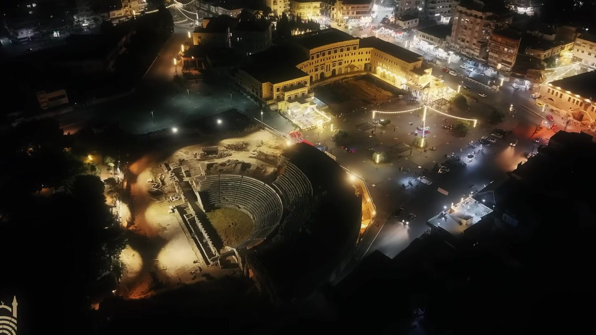
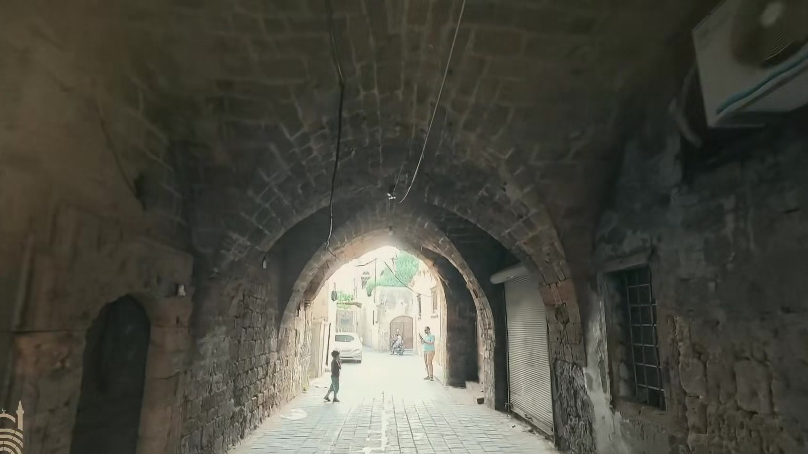
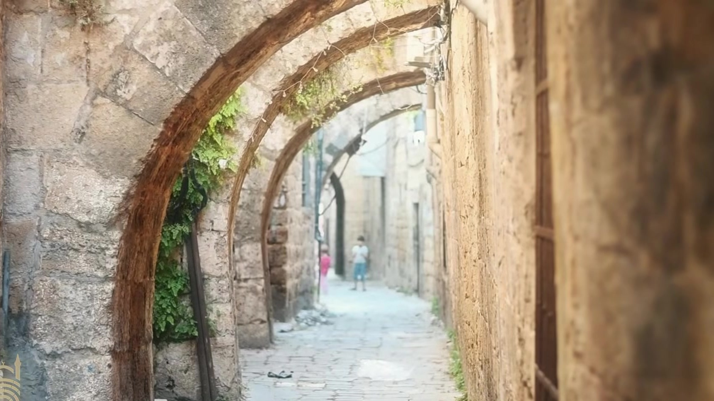
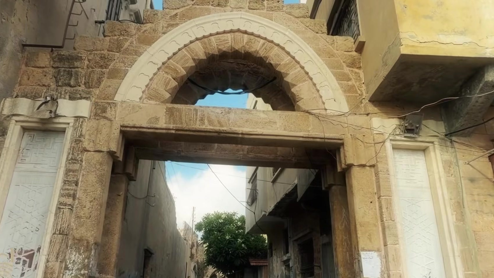
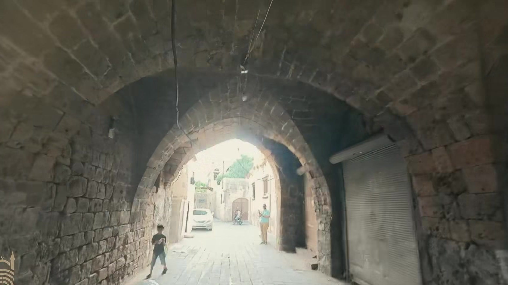
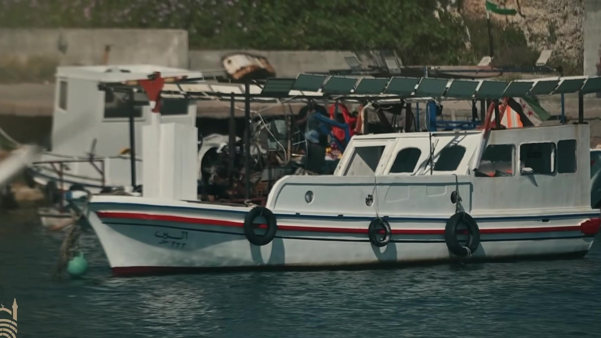

جَبْلَةُ القَدِيمَة
حِجَارَةُ البَحْرِ الشَّاهِدَة.. وَذَاكِرَةُ الجِرَاحِ المُمْتَدَّة
على تخوم المتوسط، تقف جبلة كشاهدٍ أبدي نحتته أمواج البحر وصاغته القرون. حكاية مدينة لم تكن يوماً مجرد جغرافيا عابرة، بل ملحمة إنسانية متصلة تداخل فيها شموخ الحضارة بمرارة القمع والحصار.
المَدِينَةُ، البَحْرُ، وَذَاكِرَةُ الحَجَر
تقف مدينة «جبلة» على الساحل السوري متكئة على مسرحها الروماني الشهير، لتتنفس عبق التاريخ عبر أزقة حجرية ضيقة مشبعة برائحة الملح والياسمين العتيق. لم تكن هذه المدينة يوماً هامشاً على ضفة المتوسط، بل كانت دوماً قلباً نابضاً بالحياة والتجارة والثقافة.
تتداخل في جبلة حكايات الصيادين وأصوات المآذن مع صدى خطوات أجيال تعاقبت على حجارتها البازلتية الداكنة. بيوتها القديمة بأقواسها المعقودة وأسقفها الخشبية تحكي عن حميمية مجتمع ساحلي اعتاد مواجهة الأنواء بعزيمة هادئة وتماسك فريد.
«حجارةٌ عتّقتها ملوحة البحر وصاغتها القرون.. جبلة ليست مجرد جغرافيا، بل مسرح حيّ لكرامة الإنسان.»

بَيْنَ غَارَاتِ الغُزَاةِ.. وَغَضَبِ الطَّبِيعَة

لم يكن الموقع الاستراتيجي للمدينة وميناؤها الطبيعي نعمة خالية من الأثمان؛ إذ جعلها مطمعاً للقوى المتعاقبة وساحة صراع دائم:
- صراعات الساحل والاحتلالات: من العهود الفينيقية والرومانية، إلى الحروب الصليبية التي حولت المدينة إلى ثغر عسكري محصن، وصولاً إلى استردادها وتحولها في العصور المملوكية والعثمانية إلى مركز بحري قاوم القرصنة والحملات الاستعمارية.
- فواجع الزلازل الكبرى: ضربت الساحل السوري تاريخياً زلازل مدمرة (لا سيما في القرون الوسطى)، سوّت أجزاء واسعة من المدينة بالأرض، إلا أن إصرار أهلها على الحياة أعاد بناءها من تحت الأنقاض مراراً.
كل حجر في جبلة يحمل ندبة قديمة، لكنه في الوقت ذاته يحمل توقيع الصمود والبقاء الإنساني المستمر.
رَبِيعُ 2011.. صَرْخَةُ الحُرِّيَّةِ مِنْ أَعْمَاقِ الأَزِقَّة
حين انطلقت الثورة السورية في آذار/مارس 2011 مطالبةً بالحرية والكرامة ودولة القانون، كانت جبلة من أوائل مدن الساحل التي صدحت حناجر شبابها بالهتاف السلمي النبيل.
من ساحات جامع أبي بكر الصديق والجامع المنصوري، وفي قلب الأزقة العتيقة كحي العمارة والجبابيب، تجمّع الأهالي والناشطون رافعين أغصان الزيتون والشعارات المدنية الخالصة، مؤكدين على وحدة الشعب السوري ورفض الاستبداد والفساد.
«خرجت جبلة بصدور عارية وأصوات تصدح بالحرية، لترسم في أزقتها الضيقة لوحة من أشجع محطات النضال المدني السلمي.»

قَبْضَةُ القَمْعِ.. وَحِصَارُ المَدِينَة (تَوْثِيقٌ حُقُوقِيّ)
واجه نظام الأسد الحراك السلمي في جبلة بحملة أمنية وعسكرية وحشية، موظفاً الأجهزة الأمنية والميليشيات التابعة له (المعروفة بـ«الشبيحة») لإخماد الصوت المدني بالقوة المفرطة.
وثقت الشبكة السورية لحقوق الإنسان والمرصد السوري اقتحام الأحياء بالرصاص الحي وسقوط عشرات الشهداء والجرحى في أيام دامية متتالية.
حملات دهم ليلية واسعة طالت شباب المدينة وناشطيها، حيث زُجّ بالمئات في أقبية الفروع الأمنية دون محاكمات عادلة.
رمز التضحية الإنسانية؛ طبيب استشهد تحت التعذيب الوحشي لمجرد أداء واجبه الإنساني في إسعاف الجرحى السلميين.

تفاصيل حملة القمع الموثقة:
وفق تقارير المنظمات الدولية والمحلية، شهدت جبلة في نيسان وأيار 2011 تطويقاً كاملاً قطعت فيه الاتصالات والكهرباء، واعتلى القناصة أسطح الأبنية الحكومية ومآذن المساجد لاستهداف أي حركة في الشوارع.
ترافقت العمليات مع تفتيش انتقامي للبيوت وتكسير ممتلكاتها، وبث حالة من الرعب الجمعي بهدف كسر الحاضنة الشعبية للمتظاهرين وتشويه الطابع المدني السلمي للثورة في الساحل السوري.
أَثَرُ المِحْنَةِ عَلَى النَّسِيجِ الإِنْسَانِيّ
لم تقتصر تداعيات القمع على اللحظة الآنية للمظاهرات، بل امتدت لتحدث تصدعاً عميقاً في الحياة اليومية لجبلة القديمة وأهلها:
- نزيف الكفاءات والشباب: اضطر مئات الأطباء والمهندسين والناشطين والعائلات لمغادرة مدينتهم قسراً تفادياً للاعتقال أو التصفية، مما أفرغ المدينة من طاقاتها الحيوية.
- عائلات تنتظر المغيبين: لا تزال أمهات جبلة وزوجاتها يعشن مرارة الانتظار أمام جدار الصمت حول مصير أبنائهن المختفين قسرياً في سجون النظام وأفرعه الأمنية.
- جدار الصمت والخوف: فرضت الهيمنة الأمنية مناخاً من التوجس، إلا أن الذاكرة الجمعية ظلت وفية لحقيقة ما جرى، رافضةً محاولات طمس التاريخ وتزوير شهادات الضحايا.

المَعْرَضُ السِّينَمَائِيّ: سِتَّةُ مَشَاهِدَ تَحْكِي جَبْلَة
لوحات توثيقية حقيقية لمدينة جبلة، صُممت لتجسد القوس العاطفي والإنساني للذاكرة والتاريخ (انقر على أي صورة لتكبيرها واستعراض تفاصيلها).
عراقة الحجر وذاكرة البحر
حجارة عتّقتها ملوحة البحر وصاغتها القرون؛ جبلة التي اتكأت على مدرجها الروماني لتروي قصة حضارة لا تموت.
ندوب الزلازل والغزاة
بين زلازل سوّت أحياءها بالتراب وغزوات تركت ندوبها؛ اعتادت جبلة أن تنهض من رمادها في كل مرة وتلملم شتاتها.
ربيع 2011.. صرخة الحرية
في آذار 2011، خرجت جبلة من صمتها وصدحت بالحرية والكرامة من أزقتها العتيقة ومساجدها بحراك مدني سلمي نقي.
ليل الحصار وقبضة الحديد
نيسان 2011.. تحولت الأزقة إلى مسرح للمداهمات والرصاص الحي، وحوصرت المدينة بأرتال الأمن لإخماد صوتها الحر.
معطف الطبيب والغياب المر
دفع أحرارها ثمناً باهظاً؛ أطباء قُتلوا تحت التعذيب كالدكتور صخر حلاق، ومئات الشباب المغيبين قسرياً في السجون.

صمت المرفأ وشاهدية البقاء
رغم جراح التهجير وجدران الخوف؛ تبقى جبلة بحجارتها وبحرها وأرواح شهدائها أمانة في الذاكرة وشاهدة على أن الحق لا يُمحى.
سِجِلُّ الوَفَاءِ وَذَاكِرَةُ المَدِينَة
شاركنا بشهادتك، كلمتك، أو رسالة وفاء لشهداء ومعتقلي جبلة القديمة ولأهلها الصامدين. تُحفظ هذه الكلمات كشاهد حي على نبل التضحية.